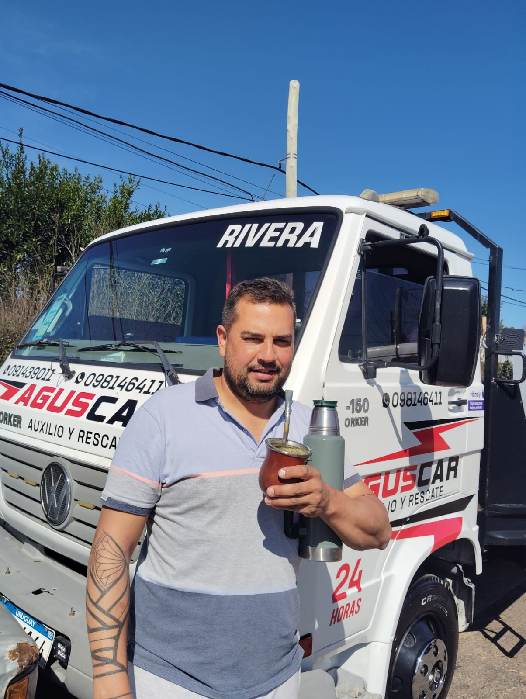

Dos camiones propios
Listos para actuar rápidamente

Auxilio, grúa y traslado de vehículos
Auxilio rápido
Auxilio rápido
cuando lo necesitás
AGUSCAR cuenta con dos camiones propios para brindar auxilio y traslado de vehículos con atención ágil, directa y confiable en todo el territorio.
Auxilio y traslado de vehículos
Soluciones rápidas para poner tu vehículo en movimiento o trasladarlo con seguridad al destino que necesites.
Auxilio vial
Asistencia inmediata ante averías, siniestros o imprevistos para que puedas continuar o garantizar el traslado seguro.
Traslado de vehículos
Traslado de autos y vehículos con grúa propia, cuidando cada detalle desde la carga hasta la entrega.

Atención ágil y directa
Dos camiones propios, atención personalizada y coordinación directa por WhatsApp para responder lo antes posible.
Cuando cada minuto cuenta
AGUSCAR es una empresa uruguaya dedicada al auxilio y traslado de vehículos. Con flota propia y atención directa, te brindamos una solución clara, rápida y segura.
-
Flota propia
Dos camiones para cubrir tu necesidad sin esperas innecesarias.
-
Respuesta directa
Hablás directamente con quien te va a asistir.
-
Seguridad en el traslado
Cuidado y profesionalismo en cada servicio.
-
Presencia local
Escritorio en Celia Bueno de Arizaga 2117, Barrio La Pedrera.
Auxilio y traslado
¿Necesitás auxilio o traslado de vehículo?
Contactanos por WhatsApp y te respondemos directo para coordinar el servicio.
Grúa, auxilio vial y traslado en Rivera - Frontera con Brasil
Respuestas directas para consultas frecuentes en Rivera y Santana do Livramento.